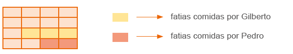
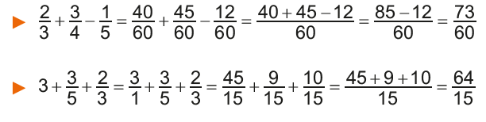
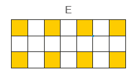
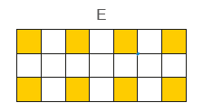
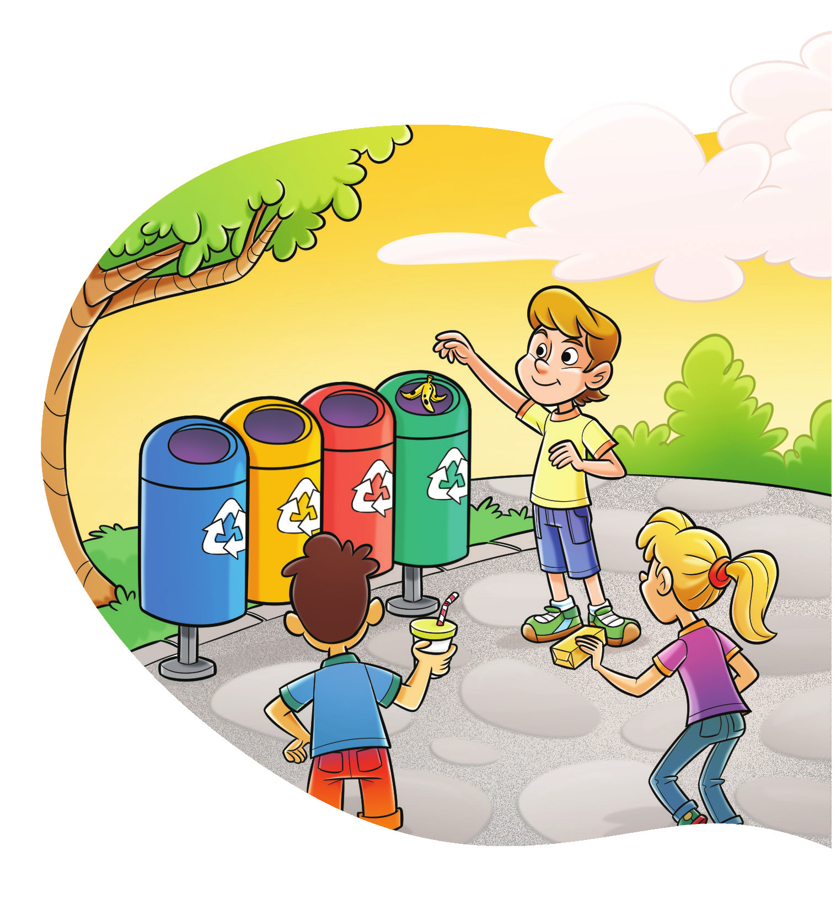
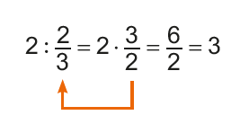
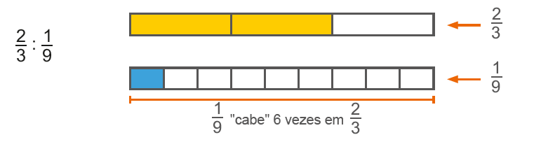
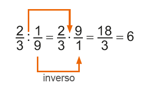
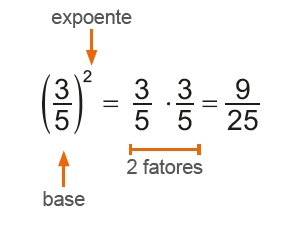

Neste capítulo, são explorados os conceitos envolvendo as operações com frações. A seguir, são feitas sugestões de atividades que, inicialmente, podem ser desenvolvidas utilizando-se os círculos coloridos. Essas atividades dão continuidade ao que foi desenvolvido no capítulo anterior. Nelas, são exploradas a adição e a subtração de frações.
Reunião de peças distintas
Ainda que pareça simples unir duas peças distintas ao acaso e expressar a sua forma de maneira simbólica, o resultado de cada operação, em muitos casos, não apresenta um resultado fácil de ser identificado (visual ou numericamente). Por isso, sugerem-se, a seguir, outros exercícios com um grau de dificuldade menor.
► Representar, mediante um desenho, uma parte da unidade que será expressa como uma adição de frações.
Por exemplo:
► Encontrar a peça correspondente ao total e escrever a adição:
► Completar a unidade (disco unitário) usando apenas duas cores, simbolizando depois a soma com as frações correspondentes. Por exemplo:

CAPÍTULO 2 - Operações com frações
Adição e subtração envolvendo frações
Situação 1
Marina comemorou o seu 10.º aniversário com uma festa. Depois de cantar “Parabéns para você”, a mãe de Marina cortou o bolo em 16 fatias iguais e as distribuiu entre os convidados. Ana comeu 4 fatias; Gilberto 3; Lúcia 1; e Pedro 2.

Representando a quantidade de fatias do bolo que cada um comeu, temos que:
► Ana comeu 4/16 do bolo;
► Gilberto comeu 3/16 do bolo;
► Lúcia comeu 1/16 do bolo;
► Pedro comeu 2/16 do bolo.

► Completar o disco unitário (unidade) com três cores diferentes, simbolizando depois a soma com as frações correspondentes.
► Representar algum resultado (da soma de peças diferentes, por exemplo) com peças de uma mesma cor.
Diferenças entre frações
A diferença entre duas frações pode ser desenvolvida com base em duas perspectivas distintas:
a) O que acrescentar a uma peça para que ela se torne maior?
b) O que sobra da peça maior se retirarmos uma região correspondente à peça menor?
GIMENEZ, J.; BAIRRAL, M. Frações no currículo do Ensino Fundamental: conceituações, jogos e atividades lúdicas. Rio de Janeiro: Gepem/EDUR, 2005. p. 34-36. (Adaptado).
177
Na situação 1, exploramos a adição e subtração de frações com denominadores iguais. Para apoiar o entendimento de como realizar estas operações, usamos desenhos para que os alunos possam visualizar de maneira prática o conceito envolvido.
Ao propor o momento da troca de ideias com os alunos, solicite aos mesmos que façam o registro no caderno das conclusões obtidas a partir dos questionamentos propostos e da representação gráfica.
No caso da adição e subtração de frações que tem denominadores iguais o cálculo a ser realizado é mais simples.
Qual é a fração que representa a parte do bolo que os meninos comeram juntos?
Para encontrar a resposta dessa pergunta, vamos utilizar um desenho auxiliar representando a situação.
O retângulo abaixo representa o bolo dividido em 16 fatias iguais. Logo, cada fatia corresponde a 1/16 do bolo.
Pedro comeu 2 fatias e Gilberto, 3 fatias. Então, das 16 fatias do bolo, os meninos comeram 5.
Podemos representar essa situação por meio da adição de frações. Observe: 2

1. Agora, troque ideias com um colega e resolvam, em seus cadernos, as seguintes questões, utilizando a adição de frações.
a) Qual é a fração que representa a parte do bolo que as meninas comeram juntas? 116 + 4/16 = 5/16
b) Que fração representa a quantidade total de bolo comido por Pedro,
Gilberto, Lúcia e Eloísa? 5/16+5/16=10/16=5/8
Note que nessa situação, o resultado final pode ser simplificado. Lmebrar os alunos
que se pode achar a fração na forma irredutível.
c) As crianças comeram mais da metade do bolo ou menos? Justifique. Comeram mais da metade, pois 58 > 21 .
Depois que as crianças comeram o bolo, a mãe de Marina guardou-o na geladeira. Que fração representa a quantidade que sobrou do bolo?
Como o bolo foi dividido em 16 fatias e as crianças comeram 10 fatias ao todo, sobraram 6 fatias.
Podemos representar essa situação por meio da subtração de frações.
Como o bolo inteiro equivale a 16/16 e as crianças comeram 10/10 , temos: 16
178
Na situação 2, temos a adição e subtração de frações que apresentam denominadores diferentes.
Neste caso, a representação gráfica permite aos alunos a visualização das partes que estão sendo adicionadas ou subtraídas. Para auxiliar o cálculo destas operações, retomamos o conceito de frações equivalentes. Analise com os alunos as frações equivalentes encontradas na situação para realizar a adição. Na situação apresentada são usadas as frações equivalentes 6/10 e 3/10. Pergunte se poderíamos, por exemplo, usar as frações equivalentes 12/20 e 6/20. Neste caso, a soma seria igual a 18/20. O resultado obtido é o mesmo?
Verifique se eles percebem que a fração equivalente escolhida às frações dadas são aquelas cujo denominador representa o mínimo múltiplo comum entre eles.
Proponha outras adições e subtrações aos alunos e faça esta análise usando outras frações equivalentes em que o denominador não representa o mínimo múltiplo comum.
2. Agora, resolvam em seus cadernos, as questões a seguir.
a) Que fração representa a quantidade de fatias que Pedro comeu a mais que Lúcia? 4/16 - 1/16 = 3/16
b) Que fração representa a diferença entre a quantidade total de fatias que os meninos comeram e a quantidade total de fatias comidas pelas meninas? 7/16 - 3/16 = 4/16 = 1/4
Na adição e subtração de frações com o mesmo denominador, conservamos o denominador e adicionamos ou subtraímos o numerador.
Situação 2
Para realizar um trabalho escolar, Marcela e Bruna deverão entrevistar todos os professores da escola. Marcela já entrevistou 3/5 dos professores e Bruna entrevistou 3/10 deles. Que fração representa a quantidade total de professores que elas entrevistaram?

Para resolver essa situação, é preciso adicionar as duas frações, que têm denominadores diferentes. Para isso, devemos encontrar frações equivalentes às frações dadas, de modo que elas apresentem o mesmo denominador. Observe:
![Três barras na horizontal de mesmo tamanho. Duas à esquerda e uma à direita. As da esquerda estão um embaixo da outra. A de cima está dividida em cinco retângulos. Os dois primeiros são azuis-claros. O terceiro é azul escuro e os outros dois brancos. Abaixo da barra, nos retângulos azuis, a fração 3/5. A barra abaixo, está dividida em 10 quadrados. Os quatro primeiros são azuis-claros. O quinto e sexto, azuis-escuros. Os últimos cinco são brancos. Abaixo da barra, na região, dos quadrados azuis, a fração 6/10. Entre as duas barras, um tracejado inicia e termina, na região com as cores azuis, sendo os 3/5 do mesmo tamanho que os 6/10. Na barra de cima, os dois primeiros retângulos na cor azul clara têm o mesmo tamanho dos quatro quadrados azuis-claros, da barra de baixo. Assim como, o terceiro retângulo azul escuro da barra de cima tem o mesmo tamanho dos quadrados azuis-escuros da segunda barra. Na terceira barra à direita, ela está dividida em dez quadrados. Os primeiros quatro quadrados estão em azul claro, o quinto e o sexto são azuis-escuros. O sétimo, oitavo e nono estão nas cores laranja e o décimo quadrado é branco. Acima dos quadrados azuis, a fração 6/10. Acima dos quadrados em laranja, a fração 3/10.](../../resources/images/fraqequi.PNG)
Marcela e Bruna entrevistaram 9/10 do total de professores.
179
Durante as resoluções das questões propostas na atividade, os alunos podem se apoiar na representação gráfica para realizar o cálculo. Incentive-os a fazer essa representação sempre que eles acharem necessário.
Encontre soluções
Atividade 2
Converse com os alunos para verificar qual é a estratégia usada por eles para calcular a fração que representa a parte vermelha. Uma outra possibilidade de resolução, além da apresenta na atividade, é eles adicionarem as frações que representam a parte verde e laranja, depois subtraírem do inteiro.
Marcela entrevistou mais professores que Bruna. Qual é a fração que representa a quantidade de professores que Marcela entrevistou a mais?
Para saber a fração que representa essa situação podemos realizar uma subtração. Da mesma forma que na adição, para realizar a subtração há a ne-cessidade de encontrar frações equivalentes que apresentem o mesmo denominador. Observe:

Logo, Marcela entrevistou 3/10 a mais da quantidade total de professores que Bruna.
Na adição e subtração de frações com denominadores diferentes, devemos encontrar frações equivalentes às frações dadas, ou seja, que apresentem o mesmo denominador, para então adicionarmos ou subtrairmos as frações.
Outros exemplos:
ENCONTRE SOLUÇÕES
1. Roberto estava com o tanque do carro vazio. Ao parar no posto, ele abasteceu o carro, que é bicombustível, com 3/5 de etanol e 1/5 de gasolina. Em seu caderno, escreva a fração que representa:
a) a quantidade a mais de etanol que Roberto colocou no tanque, se comparado à quantidade de gasolina; 2/5
b) a quantidade total de combustível colocado no tanque do carro; 4/5
c) a quantidade de combustível que faltou para completar o tanque. 1/5
2. Qual é a fração que representa a parte vermelha da figura abaixo?
1 - 1/2 - 1/3 = 8/8 - 4/8 - 3/8 = 1/8

180
3. Em seu caderno, calcule as operações a seguir, simplificando o resultado quando for possível.
a) 5/3 + 2/3 +
11/3
18/3 = 6
b) 11/13 + 12/13 -
8/13
15/13
c) 5/10 + 3/10 +
6/10 - 7/10
1/10
d) 19/9 - 12/9 +
2/9
9/9 = 1
e) 7/8 + 3/8 +
6/8 + 11/8 -
9/8
6/8 = 3/4
f) 4/5 - 3/5 +
8/5 + 7/5 -
6/5
10/5 = 2
4. Observe as figuras a seguir.


 

a) Em seu caderno, represente, na forma de número fracionário, a parte colorida de cada figura.
A= 3/8
B= 2/8 . 3/8 . 1/8 .6/8 = 3/4
A= 3/8
A= 3/8
A= 3/8
b) Usando as frações que você encontrou da parte colorida de cada desenho, represente as expressões e calcule:
► A + B - C 3/8 + 28 - 1/8 = 4/8 = 1/2
► D - E 11/21 - 8/21 = 3/21 = 1/7
c) Em seu caderno, represente os resultados das expressões por meio de desenhos.

5. Em seu caderno, calcule as operações, simplificando o resultado quando for possível.
a) 3/4 + 2/5 23/20
b) 6/7 - 2/3 4/21
c) 4/3 + 5/6 + 1/2 8/3
d) 3/2 - 1/3 - 2/5 23/30
e) 5/4 + 1/8 - 2/7 61/56
f) 7 - 2/5 + 3/10 - 3/2 + 12/20 6
6. Numa maratona, Ademar percorreu 5/9 do percurso na primeira meia hora e 2/5 na meia hora seguinte.

a) Ademar percorreu a maior distância na primeira ou na segunda meia
hora? 25/45 > 18/45 -> 5/9 > 2/5
Na primeira meia hora.
b) Que fração representa o total percorrido por Ademar durante a primeira hora de corrida? 5/9 + 2/5 = 25/45 + 18/45 = 43/45
c) Nesse momento, que fração da maratona ainda restava para Ademar percorrer? 45/45 -43/45 = 2/45
Encontre soluções
Atividade 5
a) 3/4 + 2/5 = 15/20 + 8/20 = 23/20
b) 6/7 - 2/3 = 18/21 - 14/21 = 4/21
c) 4/3 + 5/6 + 1/2 = 8/6 + 5/6 + 3/6 = 16/6 = 8/3
d) 3/2 - 1/3 - 2/5 = 45/30 -10/30 - 12/30 = 23/30
e) 5/4 + 1/8 - 2/7 = 70/56 + 7/56 - 16/56 = 77/56 - 16/56 = 61/56
f) 7 -2/5 + 3/10 - 3/2 + 12/20 = 140/20 - 8/20 + 6/20 - 30/20 + 12/20 = 120/20 = 6
181
Atividade 7
a) 2/4 + 1/12 = 6/12 + 1/12 = 7/12
12/12 - 7/12 = 5/12
Atividade 9
1/5 + 4/15 = 3/15 + 4/15 = 7/15
15/15 - 7/15 = 8/15
7. Elvira recebeu seus netos Eduardo, Leonardo e Gabriel, para passarem uma tarde em sua casa. Depois de brincarem no quintal, os meninos foram para a cozinha lanchar. Elvira fez biscoitos para eles. Eduardo comeu dois quartos dos biscoitos, e Leonardo um doze avos. Sendo assim, responda:
a) Que fração representa a quantidade de biscoitos que sobrou para Gabriel? 5/12
b) Qual dos netos comeu mais biscoitos? Eduardo
c) Que fração representa a diferença entre a quantidade de biscoitos que Leonardo comeu e a quantidade comida por Gabriel? spanr 5/12 - 1/12 = 4/12 = 1/3
8. Foi feita uma pesquisa com os alunos do 6.º ano de uma escola sobre o gênero de filme preferido. Cada aluno poderia escolher somente um gênero: animação, aventura, comédia ou suspense. Os resultados foram organizados no gráfico de setores abaixo. Analise- o e responda às questões.
Gênero preferido

a) De acordo com o gráfico, escreva a fração que corresponde à quantidade de alunos por gênero de filme. Animação: 1/2; Aventura: 1/4; comédia e suspense: 1/8
b) Qual é a fração que representa a quantidade de alunos que preferem animação ou comédia? 1/2 + 1/8 = 4/8 + 1/8 = 5/8
c) A fração que corresponde à quantidade de alunos que preferem comédia é equivalente à fração que corresponde à quantidade de alunos que preferem outro gênero. Qual gênero é esse? Suspense.
d) Qual fração representa a quantidade total de alunos que preferem animação, aventura e suspense? 1/2 + 1/4 + 1/8 = 4/8 + 2/8 + 1/8 = 7/8
e) Qual fração representa a diferença entre os gêneros animação e suspense? 1/2 - 1/8 = 4/8 - 1/8 = 3/8
9. As etapas para a construção de uma casa são três: projetos, execução dos projetos e acabamento. Do tempo gasto para a construção, 1/5 foi empregado para fazer os projetos e 4/15 representam o tempo gasto para executá-los. Qual fração do tempo gasto na construção representa o tempo empregado para fazer o acabamento dessa casa? 8/15
10. Joana propôs um desafio para Lucas: solicitou que ele resolvesse a seguinte operação:

Observe como Lucas resolveu:
► Agora é com você! Resolva, em seu caderno, as operações a seguir.
a) 3.1/2 + 1/3
3 . 1/2 + 4.1/3 = 3/1 + 1/2 + 4/1 + 1/3 = 18/6 + 3/6 + 24/6 + 2/6 = 47/6
b) 4.1/5 - 1.2/7
4.1/5 = 1. 2/7 = 4/1+ 1/5 - (1/1 + 2/7) = 140/35 + 7/35 - (35/35 + 10/35) = 102/35
Atividade 11
a) 5/4 - (1/3 + 2/5) = 4/5 - (5/15 + 6/15) = 4/5 - 11/15 - 12/15 - 11/15 = 1/15
b) (1/2 - 1/3) + (6/5 - 3/4) = (3/6 - 2/6) + (10/12 - 9/12) = 1/6 + 1/12 = 2/12 + 1/12 = 3/12 = 1/4
c) 3 - (5/4 + 2/5) = 3 - (25/20 + 8/20) = 3 - 33/20 = 60/20 - 33/20 = 27/20
d) 5/2 - (2/3 - 1/2) - 9/10 = 5/2 - (4/6 - 3/6) - 9/10 = 5/2 - 1/6 - 9/10 = 75/30 - 5/30 - 27/30 = 43/30
182
Atividade 15
Atividades como essas devem ser incentivadas com o intuito de despertar nos alunos o sentido de empatia e cooperação, contribuindo com os aspectos previstos na Competência geral 9.
Atividade 17
Votos de Marcos:
1 - (2/7 + 3/5) = 1 - (10/35 + 21/35) = 35/35 -31/35 = 4/35
Votos de João:
2/7 = 10/35
Votos de Rosa:
3/5 = 21/35
Como:
4/35 < 10/35 < 21/35
Então, Rosa teve a maior votação.
11. Em seu caderno, resolva as expressões, simplificando o resultado quando possível.
a) 4/5 - (1/3 + 1/2) 1/15
b) (1/2 - 1/3) + (5/6 - 3/4) 1/4
c) 3 - (5/4 + 2/5) 27/20
d) 5/6 - (2/3 - 1/2) - 9/10 43/30
12. O salário de Joana é de 870 reais. No mês passado, ela gastou 1/5 com o aluguel, 1/3 com alimentação e 2/5 com outras despesas. Quantos reais sobraram do salário de Joana? 58 reais.
13. Marina está lendo um livro de aventuras. No primeiro dia, ela leu 2/5 do livro. No segundo dia, ela leu 3/7 do livro. Qual é a fração que representa a quantidade de páginas que ainda faltam para Marina ler? 6/35
14. Durante o almoço tomei a metade da garrafa de suco e, no jantar, tomei a metade do que havia restado. Qual é a fração que representada a quantidade de suco que ainda resta na garrafa? 1 - 1/2 - 1/4 = 4/4 - 2/4 -1/4 = 1/4
15. Em seu caderno, elabore um problema sobre adição ou subtração de frações. Troque seu caderno com um colega e peça a ele para resolver o problema elaborado por você. Após a resolução, converse com ele sobre a resolução e utilize desenhos caso ache necessário.
16. Observe as imagens das pizzas a seguir. Elas foram cortadas em partes iguais. Resposta Pessoal

► Em seu caderno, elabore um problema sobre adição de frações usando as imagens acima como referência. Em seguida, troque seu caderno com um colega para que ele resolva o problema elaborado por você. Juntos, verifiquem se os problemas resolvidos estão corretos.
17. (OBMEP) Uma turma fez uma eleição para eleger seu representante. Três candidatos concorreram à eleição: João, Rosa e Marcos. João teve 2/7 dos votos, Rosa teve 3/5 dos votos. Quem ganhou a eleição? Rosa

18. (OBMEP) A capacidade do tanque de gasolina do carro de João é de 50 litros. As figuras mostram o medidor de gasolina do carro no momento de partida e no momento de chegada de uma viagem feita por João. Quantos litros de gasolina João gastou nesta viagem?
a) 10
b) 15
c) 18
d) 25 3/4 - 1/4 = 2/4 = 1/2
e) 30

Atividade 12
1/5 + 1/3 + 2/5 = 3/15 + 5/15 + 6/15 = 14/15
15/15 - 14/15 = 1/15
1/15 de 870 reais corresponde a 58 reais.
Sobrou 58 reais.
Atividade 13
1 - (2/5 + 3/7) = 1 - (14/35 + 15/35) = 1 - 29/35 = 35/35 - 29/35 = 6/35
A fração que representa quantas páginas faltam para serem lidas do livro é 6/35
183
Multiplicação de um número natural por uma fração
Aproveite o tema e proponha aos alunos uma integração com os componentes curriculares Arte e Língua Portuguesa, com um projeto de arrecadação de latas de refrigerante e outras embalagens recicláveis. Esse projeto além do trabalho com alguns dos temas contemporâneos destacados na BNCC, Educação Ambiental e Educação para o Consumo, visa estimular o reaproveitamento de materiais utilizados no cotidiano, deixando de ir para o lixo comum. Além disso, você pode relacionar as embalagens arrecadas com os sólidos geométricos, retomando esse conteúdo.
Multiplicação de um número natural por uma fração
Neste ano, o projeto da escola onde Paulo estuda é sobre a conscientização da importância da reciclagem. Foi feita, então, uma campanha para arrecadar o maior número possível de latas de refrigerante e sucos vazias. Para incentivar a campanha, a escola premiará a turma que arrecadar mais latas. O 6.º ano A, turma do Paulo, ficou em 2º lugar por ter arrecadado 2/7 do total. O 6º ano C foi o grande campeão, arrecadando o dobro da quantidade arrecadada pela turma de Paulo.
Qual é a fração que representa a quantidade arrecadada pelo 6º ano C?
Vamos verificar a solução dessa situação!
Sabemos que, para determinar o dobro de uma quantidade, podemos multiplicá-la por 2, ou seja, 2 ∙ 2/7. Como uma das ideias da multiplicação é a adição de parcelas iguais, temos:
Inforgráfico:

Observe outra maneira de efetuar a multiplicação: 2.2/7 = 2/1.2/7 = 2.2/1.7 = 4/7
Logo, o 6.º ano C coletou 4/7 do total de latas arrecadadas pela escola.
Na multiplicação de um número natural por uma fração, multiplicamos o número natural pelo numerador da fração, conservando o mesmo denominador.
184
Multiplicação entre frações
O 6º ano B foi a turma que menos arrecadou latinhas. A quantidade arrecadada foi 1/4 da quantidade do 6º ano C. Qual é a fração que representa a quantidade de latas arrecadadas pelo 6.º ano B?
Vamos verificar a solução dessa situação!
Representando na forma de desenho, temos:
Esse desenho representa 7 das latas.

Esse desenho representa 4/7 das latas.
A parte hachurada representa 1/4 de 4/7.
Analisando toda a figura, a parte hachurada representa 1/7 de toda a figura. Calcular 1/4 de 4/7 é o mesmo que:
1/4.4/7 = 14/4.7 = 4/28 = 1/7
Logo, o 6º ano B arrecadou 1/7 do total de latas.
Na multiplicação entre duas ou mais frações, multiplicamos o numerador de uma fração pelo numerador da outra, e o denominador de uma pelo denominador da outra.
Técnica do cancelamento
Observe as seguintes multiplicações:
2/6 . 3/4 = 6/20 = 3/10
Neste caso, a multiplicação foi efetuada e, depois, o produto foi simplificado.
Usando a técnica do cancelamento.

Nessa multiplicação, foi usada a técnica do cancelamento. O numerador 2 e o denominador 4 são múltiplos de 2. Foram, então, simplificados por 2 antes de a multiplicação ser efetuada. Assim, o resultado já fica simplificado.
A técnica do cancelamento consiste em simplificar numeradores e denominadores que são múltiplos de um mesmo número, quando possível, antes de efetuar a multiplicação.
Outro exemplo:

185
Encontre soluções
Atividade 1
Luciana deverá fazer 3 receitas: 9 ovos, 9/2 xícaras de farinha, 3/2 xícaras de óleo, 3/2 xícaras de leite, 3 colheres de chá de fermento, sal a gosto, 450 gramas de presunto picado, 450 gramas de queijo picado e 6 tomates temperados com cheiro verde, sal e óleo.
Atividade 2
Atividade 5
Ao abordar o assunto relacionado às ações voluntárias, como colaborar com uma instituição de assistência aos idosos, é importante discutir com os alunos a respeito dos princípios éticos, democráticos e solidários abordando o tema transversal de “Processo de envelhecimento, respeito e valorização do idoso”. Essa discussão também ajuda a despertar nos alunos o respeito às diferentes opiniões e conscientizá-los sobre os problemas causados em consequência do preconceito, atendendo assim à Competência específica de Matemática 7 e a Competência Geral 9.
ENCONTRE SOLUÇÕES
1. Luciana adora cozinhar. Para receber suas amigas, ela pensou em fazer uma torta salgada. Veja a receita a seguir.
Torta salgada
Ingredientes
3 ovos
3/2 xícaras de farinha
1/2 xícara de óleo
1/2 xícara de leite
1 colher de chá de fermento
Sal a gosto
150 gramas de presunto picado
150 gramas de queijo picado
2 tomates temperados com cheiro verde, sal e óleo.
Modo de fazer
- Bata no liquidificador o leite, a farinha, o óleo, os ovos e o fermento.
- Deposite este creme em um tigela e misture os demais ingredientes.
- Adicione tudo em um fôrma. Leve ao forno por, pelo menos, 40 min, a uma temperatura de 180ºC.
► Uma receita rende o suficiente para 4 pessoas. Como Luciana receberá 12 amigas, quantas receitas ela deverá fazer? Em seu caderno, escreva a quantidade de ingredientes que ela utilizará para fazer a torta.
2. Em seu caderno, efetue as multiplicações, simplificando-as sempre que possível.
a) 2/3 . 5 10/3
b) 4/9 . 18 8
c) 7/13 . 13 7
d) 11/25 . 5 11/5
e) 12 . 1/12 1
f) 11 . 2/22 1
g) 8 . 5/3 40/3
h) 124 . 3/62 6
3. No 6.º ano A, 3/5 dos alunos são meninos.
Desses meninos, 1/4 joga futebol. Qual é a fração
que representa a quantidade de alunos do 6.º ano A que jogam futebol?
1/4 . 3/5 = 3/20 Do total de meninos do 6° ano, 3/20 jogam futebol
4. Durante o mês de dezembro, uma concessionária vendeu 125 carros. Destes, 3/5 tinham ar-condicionado. Quantos carros com ar-condicionado foram vendidos nesse mês?
5. Gabriela e Bruna resolveram colaborar com a associação de idosos no bairro onde moram. Cada uma recebeu um bloco contendo 20 rifas para vender durante a semana. Gabriela vendeu 3/4 do seu bloco e Bruna 4/5. Quantas rifas Gabriela e Bruna venderam juntas?
Ao todo, elas venderam 31 números de rifas.6. Efetue as multiplicações, simplificando- as sempre que possível.
a) 2/3 . 4/7 8/21
b) 3/2 . 4/5 6/5
c) 2/5 . 10/6 2/3
d) 120/7 . 49/12 70
e) 1/2 . 4/3 . 5/7 10/21
f) 5/4 . 4/3 . 1/3 5/9
g) 15/4 . 3/5 . 8/9 2
h) 3/8 . 6 . 16/9 . 5/12 5/3
7. Em uma longa viagem, 5/6 foram percorridos
utilizando-se dois tipos de veículos auto1/3 desse
percurso foi feito de ônibus, qual é a fração da viagem que representa o
trecho feito de automóvel? 1/3 . 5/6 = 5/18 18/18 - 5/18 = 13/18
O trecho feito de automóvel representa 13/18.
186
Atividade 6
Atividade 10
3/10 + 2/5 = 3/10 + 4/10 = 7/10
10/10 - 7/10 = 3/10
A fração 3/10 corresponde a 1 500 eleitores.
Total: 1 500 : 3 = 500
500 ∙ 10 = 5 000
O total é de 5 000 eleitores.
O candidato A obteve 1 500 votos, e o candidato B, 2 000 votos.
8. Em seu caderno, calcule e, sempre que possível, simplifique o resultado.
a) 1/2 + 3/5 . 2/3 9/10
b) 1/7 . 14/3 + 5/4 - 1/3 19/12
c) 1/6 . (5/3 - 1/2) + 2/3 31/36
d) 3/4 + 3 . (4/5 - 3/4) 9/10
9. Um avião com capacidade para 365 passageiros está com 3/5 de seus lugares vendidos. Quantos lugares ainda restam?
10. Na eleição para prefeito de uma cidade, verificou-se que 3/10 da população votou no candidato A, 2/5 da população votou no candidato B e 1 500 pessoas votaram em branco. Quantos votos o candidato A obteve? E o candidato B? O candidato A obteve 1 500 votos, e o candidato B, 2 000 votos.
Números inversos
Vamos entender o que a menina da charge acima disse. Observe:
► 2 ∙ 1/2 = 2/1 . 1/2 = 2/2 = 1
► 2 é inverso de 1/2 e vice-versa.
► 1/5 . 5 = 5/5 = 1
► 1/5 é inverso de 5 e vice-versa.
► 4/4 . 5/4 = 20/20 = 1
► 4/4 é inverso de 5/4 e vice-versa.
A multiplicação de um número fracionário pelo seu inverso sempre resulta em 1.
Atenção!
O número zero não possui inverso.
Atividade 8
187
Iniciamos a divisão envolvendo frações, explorando uma situação em que temos um número natural dividido por um número fracionário. Neste caso, estamos explorando a ideia de medir, ou seja, quantas vezes o número fracionário indicado cabe no número natural.
Antes de iniciar o estudo com divisão de números fracionários você pode, utilizando as peças do Tangram, retomar o conceito de medir. Quando medimos uma grandeza significa compará-la com outra de mesma espécie, de acordo com a unidade de medida considerada.
Usando o Tangram, é possível verificar, por exemplo, quantas vezes o triângulo menor ou o triângulo maior cabe no inteiro (quadrado). Comparando estas peças com o inteiro, identificamos que o triângulo grande representa 1/4 do inteiro e o triângulo menor 1/16. Logo, podemos indicar 1 : 1/4 = 1 . 4 = 4 ou 1 : 1/16 = 1 . 16 = 16.
A representação gráfica é um importante recurso durante o estudo sobre como realizar a divisão entre números fracionários.
Divisão envolvendo frações
Situação 1
A turma de Carlos se reuniu para brincar. Sua mãe, então, resolveu comprar 2 garrafas de suco para servi-los. Estimando que cada um tomará 2/3 da garrafa e não sobrará nada nesse recipiente, quantas pessoas há nessa turma?
Se verificarmos quantas vezes 2/3 cabe em 2, descobriremos a quantidade de pessoas.
Representando a situação na forma de desenho, temos:
![Quatro barras na horizontal, duas à esquerda, uma embaixo da outra. Duas à direita, uma embaixo da outra. Nas da esquerda. A de cima está em verde. Abaixo, a barra está dividida em três partes, as duas primeiras, na cor verde. A última parte em branco. Abaixo da parte em verde, a fração 2/3. Abaixo da parte branca, 1/3. Nas barras à direta. A de cima é verde. A debaixo está dividida em 3 partes. A primeira é branca e as outras duas em verde. Abaixo da parte branca, a fração 1/3. Abaixo, da parte verde, 2/3.](../../resources/images/pg190.PNG)
Assim, 2 : 2/3 = 3
Note que o quociente pode ser encontrado multiplicando-se o primeiro número pelo inverso do segundo.
Perceba que obtivemos o mesmo resultado ao multiplicar 2 pelo inverso de 2/3.
Logo, são 3 pessoas que fazem parte da turma.
Situação 2
Para o lanche, a mãe de Carlos comprou 1/2 de um bolo de chocolate para repartir, igualmente, entre todos eles de modo que não sobrasse nada. Qual é a fração que representa a parte que cada um comeu do bolo inteiro?
188
Na situação 2, temos um número fracionário sendo dividido por um número natural. Neste caso, exploramos a ideia de repartir em partes iguais.
Para o entendimento do conceito que envolve esta divisão, a representação gráfica é fundamental. Nela, os alunos poderão perceber que a metade do inteiro é dividido em 3 partes iguais. Poderão, ainda, verificar que cada parte encontrada após a divisão representa 1/6 do inteiro.
Após a exploração do conceito por meio da representação gráfica é que se pode mostrar como realizar a divisão, multiplicando-se o número fracionário pelo seu inverso.
Amplie o estudo de divisão envolvendo frações, propondo situações em que a divisão acontece entre dois números fracionários que não são números inteiros.
Representando a situação por meio de desenhos, temos:
![Três barras na horizontal, uma abaixo da outra. A primeira está dividida em duas partes na horizontal. A parte de cima é branca, a de baixo é amarela. À direita da barra, a fração ½. A segunda barra, está dividida em duas partes, na horizontal. A de cima está em branco. A de baixo, dividida em três partes iguais. À direita da barra, a fração ½ dividido 3. A terceira barra está dividida em duas partes, na horizontal. A de cima está em branco, dividida em 3 com linhas tracejadas. Na parte debaixo, a primeira e a segunda são amarelas. A terceira amarela com linhas na diagonal. À direita da barra, a fração 1/6.](../../resources/images/191barras.PNG)
Logo, temos que:
1/2 : 3 = 1/6
Vamos agora multiplicar 1/2 pelo inverso de 3.
1/2 : 3 = 1/2 . 1/3 = 1/6
Perceba que tivemos o mesmo resultado ao multiplicar 1/2 pelo inverso de 3.
Na divisão de duas frações, multiplicamos a primeira fração pelo inverso da segunda fração.
Observe, agora, a seguinte situação:
Logo, 2/3 : 1/9 = 6.
Podemos efetuar essa operação da seguinte maneira:
189
Encontre soluções
Atividade 3
Atividade 7
Uma fração também representa uma divisão entre o numerador e o denominador. Observe algumas formas de representar a divisão:
► 15/5 = 15 : 5
► 7 : 3 = 7/3
► 4/3/1/7 = 4/3 : 1/7
ENCONTRE SOLUÇÕES
1. Em seu caderno, determine o inverso de cada número abaixo.
a) 5/4 4/5
b) 8/7 7/8
c) 1/13 13
d) 12/17 17/12
e) 9 1/9
f) 1 1
2. Qual é o número que, multiplicado por 13/19, resulta em 1? 19/13
3. Em seu caderno, calcule as seguintes divisões, simplificando o resultado quando possível.
a) 3: 2/6 9
b) 12 : 24/7 7/2
c) 5 : 1/4 20
d) 1 : 4/5 5/4
e) 0 : 12/13 0
f) 4/9 : 8 1/18
g) 15/17 : 15 1/17
h) 10/7 : 1 10/7
4. Três pessoas comeram a metade de um melão. Qual é a fração que
representa a quantidade que cada um comeu do melão?
1/2 : 3 = 1/2 . 1/3 = 1/6
A fração que representa a quantidade de melão que cada um comeu é 1/6.
5. Márcia fez 8 litros de suco de laranja e pretende colocá-los em
garrafas de 1/4 de litro. De quantas garrafas ela
precisará?
8 : 1/4 = 8 . 4 = 32
Márcia precisará de 32 garrafas.
6. Alguns amigos resolveram viajar pelo Brasil. Viajando de carro, eles
já percorreram 3/5 do trajeto total e, para não
ficar cansativo, cada um dirigiu um pouco. Sabendo que cada um dirigiu
1/5 do percurso, quantos amigos estão viajando?
3/5 : 1/5 = 3/5 . 5 = 3
Três amigos estão viajando juntos.
7. Em seu caderno, calcule as divisões, simplificando o resultado sempre que possível.
a) 3/5 : 3/2 2/5
b) 6/7 : 12/14 1
c) 12/5 : 6/15 6
d) 12/13 : 12/13 1
e) 1/2 : 1/4 2
f) 1/4 : 1/2 1/2
g) 1/3 : 1/5 5/3
h) 14/18 : 21/6 2/9
8. Em seu caderno, calcule e, sempre que possível, simplifique as expressões numéricas.
a) 2/15 + 4/5 : 1/3 38/15
b) 11/10 + 5/2 : 10/16 - 1/4 97/20
c) (7 - 1/3) : (1/4 + 2/3) 80/11
d) 3/4 . 12/9 + 1/2 : 1/3 5/2
e) (1/5 + 1/2) : 7/10 1
f) 3 . [2/5 : (1/4 + 3/2)] 24/35
9. Ana Carla comprou uma garrafa de 20 L de água. Ela irá encher
garrafinhas de água que cabem 1/2 de litro.
Quantas garrafinhas de água Ana Carla conseguirá encher?
20 : 1/2 = 20 . 2 = 40; 40 garrafinhas de água.
10. Lucas comprou 2 quilogramas de açúcar e deverá colocar em potes que cabem 1/4 de quilograma cada um. Quantos potes de açúcar ele conseguirá encher? 2 : 1/4 = 2 . 4 = 8; 8 potes.
Atividade 8
190
Potenciação de frações
Lembrando-nos da potenciação com números naturais, temos:
34
34 = 3 ∙ 3 ∙ 3 ∙ 3 = 81
4 fatores
Para calcular uma potência com números fracionários, usaremos o mesmo raciocínio. Veja alguns exemplos.
\(\left(\dfrac{3}{5}\right)^{2}\)
\(\left(\dfrac{1}{2}\right)^{5}\)
\(\left(\dfrac{1}{2}\right)^{5} = \dfrac{1}{2} \cdot \dfrac{1}{2} \cdot \dfrac{1}{2} \cdot \dfrac{1}{2} \cdot \dfrac{1}{2} = \dfrac{1}{32} \)
\(\left(\dfrac{2}{7}\right)^{3}\)
\(\left(\dfrac{2}{7}\right)^{3} = \dfrac{2}{7} \cdot \dfrac{2}{7} \cdot \dfrac{2}{7} = \dfrac{8}{343} \)
Lembrando-nos de situações em que o expoente é 1 ou 0, temos: 6 1 6
(6/7)1 = 6/7
(2/5)0 = 1
ENCONTRE SOLUÇÕES
1. Calcule no caderno:
a) (2/3)3 4/9
b) (3/2)3 27/8
c) (1/4)1 1/4
d) (1/10)5 1/100000
e) (12/17)0 1
f) (10/11)2 100/121
2. Qual é o quadrado de 5/6? 25/36
3. Qual é o cubo de 2/5? 8/125
4. Qual é o valor de 1/3 elevado à quinta potência? 1/243
5. Qual é o quadrado do inverso de 13/9? 169/81
6. Em seu caderno, calcule as seguintes expressões, simplificando o resultado sempre que possível.
a) 3/5 + (3/2)3 : 3/8 48/5
b) (2/3 : 1/6)2 . 5/4 20
c) (2/3 - 1/2) + (3/4 - 1/2)2 83/48
d) [(1/2)2 + (1/2)3] : (7/8 ) 3/7
Encontre soluções
Atividade 6
191
Raiz quadrada
Antes de iniciar o estudo sobre a raiz quadrada de um número fracionário, retome o conceito de radiciação de números naturais.
Neste momento, apresentamos somente como calcular a raiz quadrada de números fracionários, porém podem surgir questionamentos sobre como realizar cálculos em que as raízes apresentam o índice diferente de 2. Converse com os alunos e questione como eles fariam, por exemplo, para calcular \(\sqrt[3]{\dfrac{27}{125}}\)
Raiz quadrada
Anteriormente, estudamos como calcular a raiz quadrada exata de um número natural.
√4 = 2 pois 2² = 4
√25 = 5 pois 5² = 25
Vejamos agora como calcular a raiz quadrada de um número fracionário.
► √1/4 = 1/2, pois (1/2)2 = 1/4
► √9/25 = 3/5, pois (3/5)2 = 9/25
► √1/100 = 1/10, pois (1/10)2 = 1/100
Para calcularmos a raiz quadrada de um número fracionário, encontramos a raiz quadrada do numerador e a raiz quadrada do denominador.
ENCONTRE SOLUÇÕES
1. Calcule no caderno:
a) √16/25 4/5
b) √49/81 7/9
c) √36/121 6/11
d) √36/121 8/13
e) √100/196 10/14
f) √1/10 000 1/100
g) √19/16 5/4
h) √55/4 5/2
i) √17/9 4/3
j) √61/4 5/2
2. Resolva as expressões abaixo em seu caderno.
a) (1/2)2 √25/16 : 1/5 13/2
b) (1/2 + 1/4)2 - √1/49 . 1/2 : 2/7 29/80
c) ( 1/3)2 + √1/81 + ( 1/2 - 1/3) 7/18
d) ( 1/2)4 : 3/32 + 1/2 √1/16 19/24
e) √49/64 : 7/4 + 2/5 - (1/3)2 71/90
Encontre soluções
Atividade 2
192